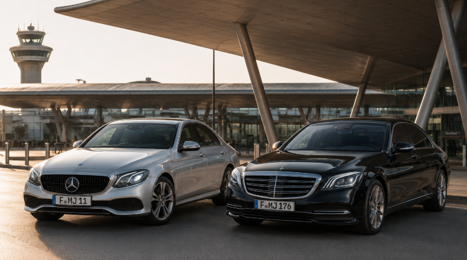
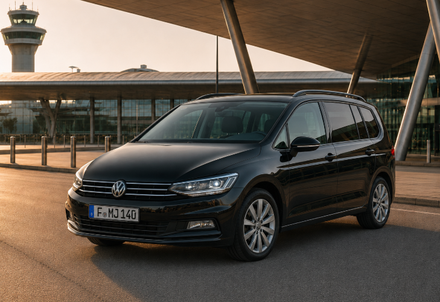

Fahrt anfragen
Abholort, Ziel, Datum, Uhrzeit und Personenzahl per Formular, WhatsApp oder Telefon senden.
Flughafentransfer Frankfurt ab 29 € – direkt, bequem und mit Festpreis vor der Buchung. Abholung in Frankfurt, Neu-Isenburg, Offenbach, Mainz, Wiesbaden, Darmstadt, Mannheim, Heidelberg und Umgebung.
Einfach anfragen, Preis vorab erhalten und zur vereinbarten Zeit direkt abgeholt werden.
Abholort, Ziel, Datum, Uhrzeit und Personenzahl per Formular, WhatsApp oder Telefon senden.
Sie erhalten den konkreten Preis vor der Buchung und können die Fahrt anschließend bestätigen.
Abholzeit und Treffpunkt werden direkt vereinbart. Bei Flughafenabholung hilft die Flugnummer bei der Koordination.
Ihr Fahrer holt Sie am vereinbarten Ort ab und bringt Sie ohne unnötigen Umstieg direkt zum Ziel.
Bei einer Abholung am Flughafen können Sie Ihre Flugnummer direkt in der Anfrage angeben. Dadurch lassen sich Änderungen bei der Abholung besser berücksichtigen. Bei einer bekannten Verspätung oder kurzfristigen Änderung senden Sie uns bitte zusätzlich eine kurze Nachricht per WhatsApp.
Frankfurt Flughafen, Frankfurt-Hahn oder XL – wählen Sie die passende Fahrt.



Für Ihre Flughafenfahrt wissen Sie vor der Buchung, wie der Ablauf aussieht und wie Sie uns erreichen. SD Flughafentransfer ist eine Marke der Skyline Drive GmbH, Friedhofstraße 13, 63263 Neu-Isenburg · HRB 59360 · direkter Ansprechpartner per Telefon und WhatsApp.
Der konkrete Fahrpreis wird vor Ihrer Bestätigung genannt. So kennen Sie die Kosten vor Fahrtbeginn.
Anfrage per WhatsApp, Formular oder Telefon – ohne Registrierung und mit direkter Abstimmung Ihrer Fahrt.
E-Klasse, Vito oder V-Klasse passend zu Personenzahl und Gepäck. Kindersitze können bei der Anfrage angegeben werden.
Transfers unter anderem aus Frankfurt, Neu-Isenburg, Offenbach, Mainz, Wiesbaden, Darmstadt, Mannheim und Heidelberg.
Fahrten sind 24/7 auf Anfrage möglich – abhängig von der aktuellen Fahrzeug- und Fahrerverfügbarkeit.
Kundenbewertungen sind direkt auf der Website verlinkt und geben einen Einblick in Erfahrungen mit unserem Service.
Direkte Abholung, Preis vor Buchung und passende Fahrzeuge für Einzelreisende, Familien und Gruppen.
Direkt von Mannheim zum Frankfurt Airport – ab 89 €.
Mannheim Transfer ansehen →Direkt von Heidelberg zum Frankfurt Airport – ab 89 €.
Heidelberg Transfer ansehen →Direkt von Mainz zum Frankfurt Airport – ab 39 €.
Mainz Transfer ansehen →Direkt von Wiesbaden zum Frankfurt Airport – ab 39 €.
Wiesbaden Transfer ansehen →Der konkrete Festpreis wird vor der Buchung bestätigt.
Klare Größen, klare Infos – damit Sie direkt sehen, was zu Personen und Gepäck passt.
Ideal für Einzelpersonen, Paare und kleinere Gruppen mit klassischem Flughafengepäck.
Ideal für Familien, Gruppen und Fahrten mit mehr Gepäck oder zusätzlichem Platzbedarf.
Die wichtigsten Antworten zu Preis, kurzfristiger Buchung, Gepäck, Kindersitzen und Abholung.
Fahrten aus Frankfurt zum Flughafen Frankfurt starten bei uns ab 29 €. Der genaue Preis hängt von Abholort, Ziel, Personenzahl und Fahrzeug ab. Den konkreten Preis erhalten Sie vor der Buchung.
Ja. Kurzfristige Anfragen sind je nach Fahrzeug- und Fahrerverfügbarkeit möglich. Am schnellsten erreichen Sie uns per WhatsApp oder telefonisch.
Ja. Sie erhalten den konkreten Preis vor Ihrer Bestätigung, damit die Kosten vor Fahrtbeginn transparent sind.
Abholort, Ziel, Datum und Personenzahl eintragen und die Anfrage mit einem Klick in WhatsApp öffnen. Weitere Details wie Gepäck, Flugnummer oder Kindersitze können dort direkt abgestimmt werden.
Geben Sie bei einer Flughafenabholung Ihre Flugnummer an. Dadurch können Änderungen bei der Abholung besser berücksichtigt werden. Bei einer bekannten Verspätung empfehlen wir zusätzlich eine kurze Nachricht per WhatsApp.
Ja. Kindersitze können bei der Anfrage angegeben werden. Teilen Sie uns Anzahl und Bedarf möglichst früh mit.
Geben Sie Personenzahl und möglichst die Anzahl der Koffer an. Für Gruppen bis 8 Personen stehen größere Fahrzeuge wie Vito oder V-Klasse zur Verfügung. Bei besonders viel Gepäck prüfen wir vorab, welches Fahrzeug geeignet ist.
Bei mehreren Personen kann ein gemeinsamer direkter Flughafentransfer praktisch sein: Sie werden an der vereinbarten Adresse abgeholt, fahren ohne Umstieg zum Flughafen und kennen den Preis vor der Buchung. Fahrten aus Frankfurt starten ab 29 €.
Ja. Früh- und Nachtfahrten sind 24/7 auf Anfrage möglich, abhängig von der aktuellen Fahrzeug- und Fahrerverfügbarkeit.
Der konkrete Treffpunkt wird vor der Abholung direkt mit Ihnen abgestimmt. Ihre Flugnummer hilft dabei, die Abholung besser zu koordinieren.
Ja. Sie können bei der Anfrage direkt eine Rückfahrt ergänzen und beide Fahrten zusammen abstimmen.
Ja. Der Transfer kann direkt an Ihrer gewünschten Adresse starten und ohne Umstieg zum vereinbarten Ziel führen.